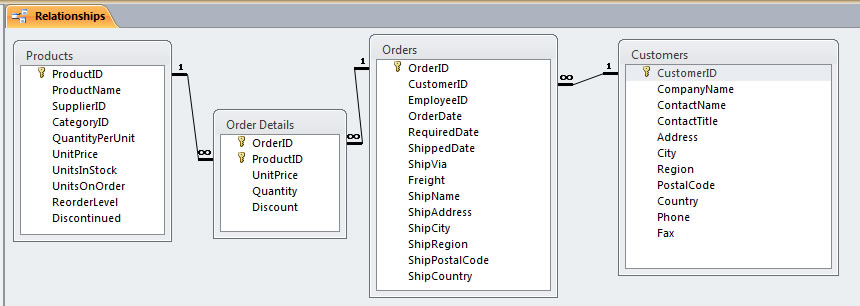

After completing this assignment you will be able to use a database application to
The exercises in this assignment should be done in the order presented.
If you enjoy working with databases, look into MIS 342-Advanced Business Computer Applications,which goes into more detail on how databases can be used by businesses to make decisions.
The purpose of this assignment is to learn why businesses and other entities use database software. Yes you can use a spreadsheet to make a list of customers and what they have ordered, but there are limits to that approach. When a customer has placed multiple orders, and you want to contact that customer, which record contains the correct contact information in the case where there are differing addresses or phone numbers? Some other thing to consider are:
This assignment will cover a variety of ways to use a database application to work with data. You are encouraged to explore on your own to find additional features that will make your life and present or future jobs easier.
Open and examine this file: FlatFile_Sales.xlsx
Answer these questions:
1. (50) Who is the contact person at the Company "Toms Spezialitäten" ?
The data below is from the file Northwind_Sales.accdb. (note-Mac users cannot open this file, instead answer the questions by viewing the screen shots below) Below is the view when you go to the tab "Database Tools" and select "Relationships". Explore the diagram that you see, which will look like the one below.

There are four related tables- Products, Order Details, Orders and Customers.
Examine the "Customers" table. Look up the record for the Company "Toms Spezialitäten".
2. (50) Explain briefly why the problem of who is the contact person for a specific company could not occur in a relational database:
For this assignment you must complete this Chapter 5 video 'Establishing constraints with criteria' which is 4m 37s. If you have a PC, the database file can be downloaded from LinkedIn Learning
As you work through this question, when they deomonstrate how to show Customers in the United States, and how to select various states such as California, think about how to make a query that shows customers from 'Texas'
Then answer the following question:
3. (50) What do you type in the Query by Design grid, criteria cell, to see only customer records from Texas?
You are strongly encouraged to work through the entire Office 365: Access Essential Training video, which takes 6h 45m, but is well worth it. There are other very useful videos on databases and SQL available in LinkedIn Learning
Download a copy of the OrderDetails.xlsx file to your ' ' folder.
Open OrderDetails.xlsx using Excel and answer the following question.
4. (50) List the fields in the Order Details table
In Excel create a new worksheet that has the following settings. Worksheet Name: tblInvoices
Required Fields/column headings: InvoiceID CustomerID Status InvoiceDate SalespersonName ShipDate ShipVia ShippingCost Add two records/rows to the worksheet, with data of your choosing.
(50) 5. Use the Snipping Tool to make a screen shot of the worksheet. Save the screen shot as "Ex3" in your ' ' folder. You will be combining screen shots from several exercises at the end of this assignment, just as you did in Summative01-PDF File Creation.
Download a copy of the Orders.xlsx file to your ' ' folder. Using the file Create a query in Excel that answers the following question. What are the company names, in ascending alphabetical order, that have placed orders? Hint: What is the purpose of the 'OrderDate' field?
(50) 6. Use the Snipping Tool to make a screen shot showing the first 10 company names. Save the screen shot as "Ex4" in your ' ' folder. You will be combining screen shots from several exercises at the end of this assignment, just as you did in Summative01-PDF File Creation.
Note: Pivot tables in Excel perform the function of Access Crosstab Queries. The purpose of these tools is to quickly summarize large amounts of data. Download a copy of the SalesByCategory.xlsx file to your ' ' folder. Create an Excel pivot table using the workbook SalesByCategory.xlsx Use the following settings: Row Heading: Category Name Column Heading: ProductName Column and Row Intersection: Sum(ProductSales)
Answer this question: 7. (50) What is the Total of ProductSales for the Category 'Dairy Products'?
Use a web browser to verify that you have published your website to https://classes.winona.edu/... Check that your name, StarID, email, class, semester, section and all of your answers are correct and visible. From the menu choose File>Print... and using "Microsoft Print to PDF" save a copy of this assignment as a .pdf file in your ' ' folder.
(50) 10. Save your file 'WebPage.pdf' to the ' ' folder.
Create one .pdf (portable document format) file from the screen shots that you have taken by following these steps.
(50) 11. Save your file 'ScreenShots.pdf' to the ' ' folder.
Use PDFill to merge the WebPage.pdf file with the ScreenShots.pdf file, and save it as 'Summative07.pdf' in ' ' folder.
(50) 12. Upload your file 'Summative07.pdf' to the D2L 'Summative07' Assignment folder.
Use a browser to view your completed and published website at: https://classes.winona.edu/... Ensure that you have linked this assignment on your home page. Note that your screen shots do not have to be completed to perform this step.